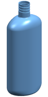
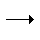
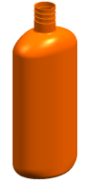
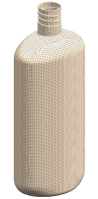
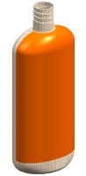
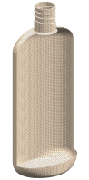
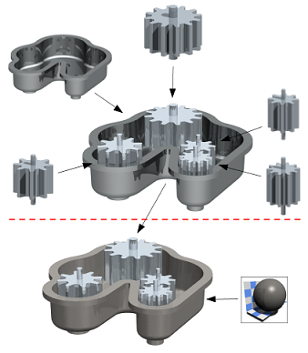

应用到面的材料和纹理替代应用到实体的材料和纹理。这允许单独编辑这些面并为将各种材料和纹理应用到模型中的不同对象提供了灵活性。
如果为实体指派材料和纹理，则单独编辑不可用。
|
 |
 |
 |
 |
|
|
原始状态 |
选择过滤器 = 实体 |
应用的塑料纹理 |
||
|
 |
 |
|||
|
实体具有纹理 |
选择过滤器 = 面 |
应用的透明玻璃纹理 |
通过装配结构应用后，材料和纹理可通过一个层次结构显示。
在装配级上应用的材料和纹理替代在部件级上应用的材料和纹理

建议在部件级上主要应用特定于部件的材料和纹理，将装配级留给所需的任何全局环境纹理。如需要，可以在装配级上指派部件级材料